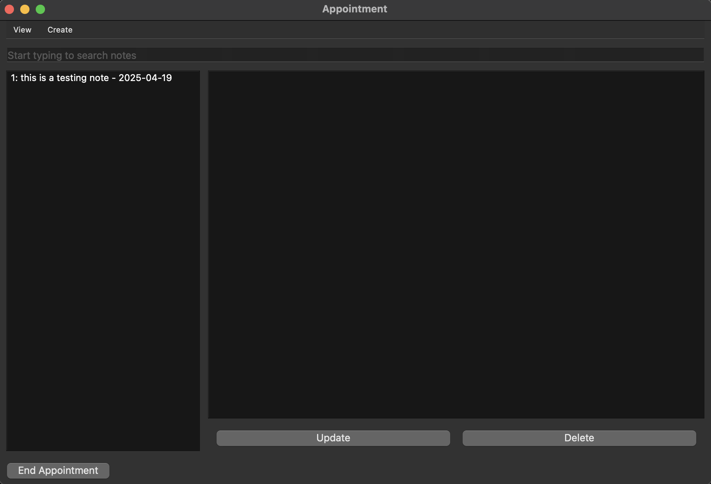

Medical Clinic Patient Management System
A comprehensive patient management system that enables medical clinics to efficiently manage patient records, appointments, and medical information. Built with a focus on data persistence and user-friendly interface design.
Python
PyQT6
JSON
Pickle
DAO Pattern
- Implemented CRUD operations for patient data management
- Designed Data Access Object (DAO) pattern for clean separation of concerns
- Built intuitive GUI using PyQT6 for streamlined workflow
- Utilized JSON and Pickle for robust data persistence